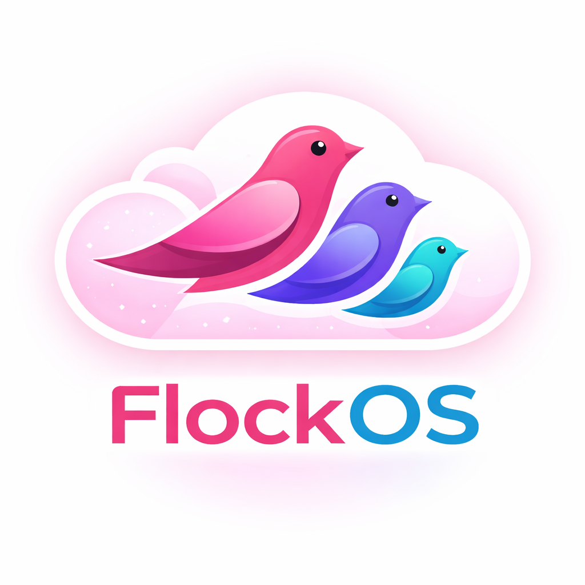
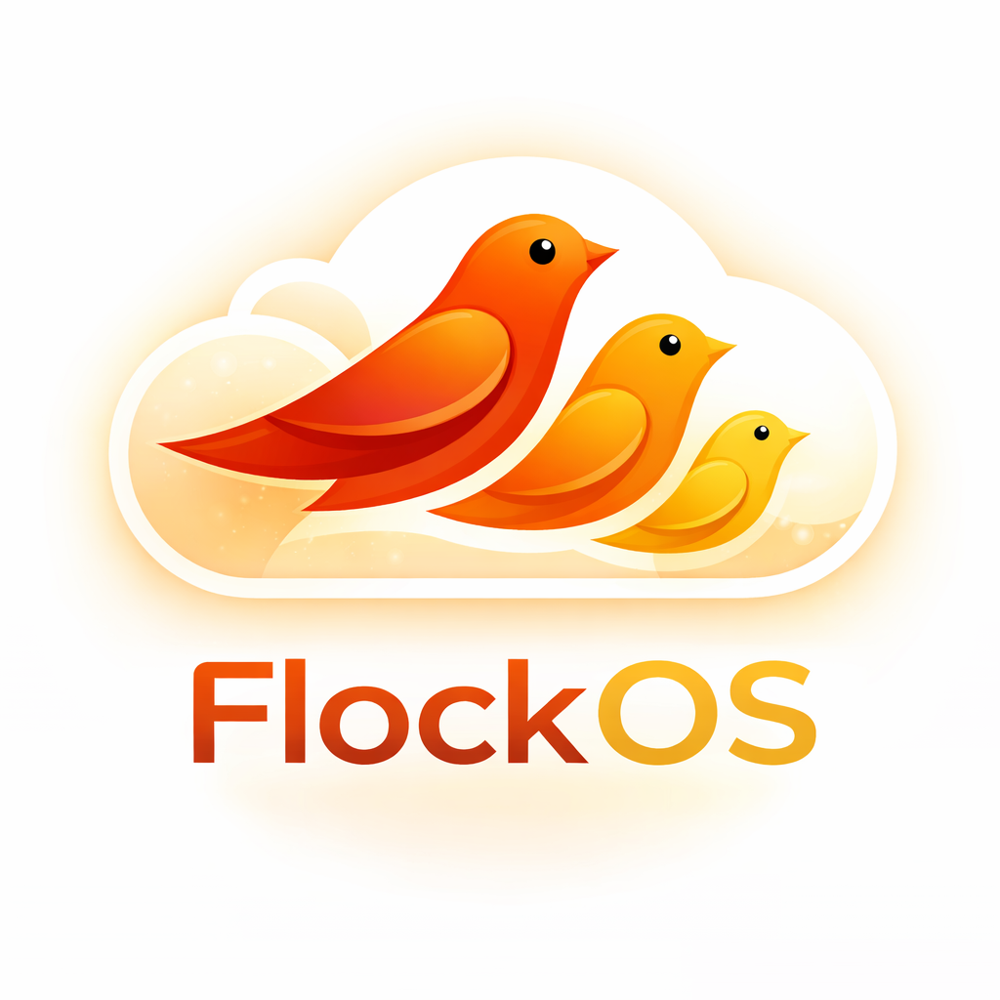
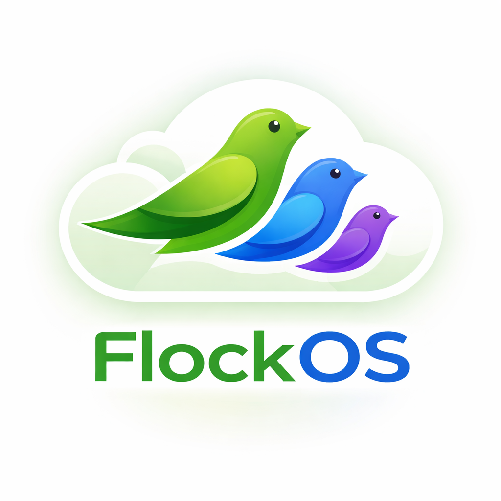

The master build at the top, with each church deployment branching below.
The root source deployment — the canonical FlockOS build.

Base deployment — ministry OS for any church.

FlockOS for The Wellspring community.
FlockOS for Trinity Baptist Church.

FlockOS for The Forest community.